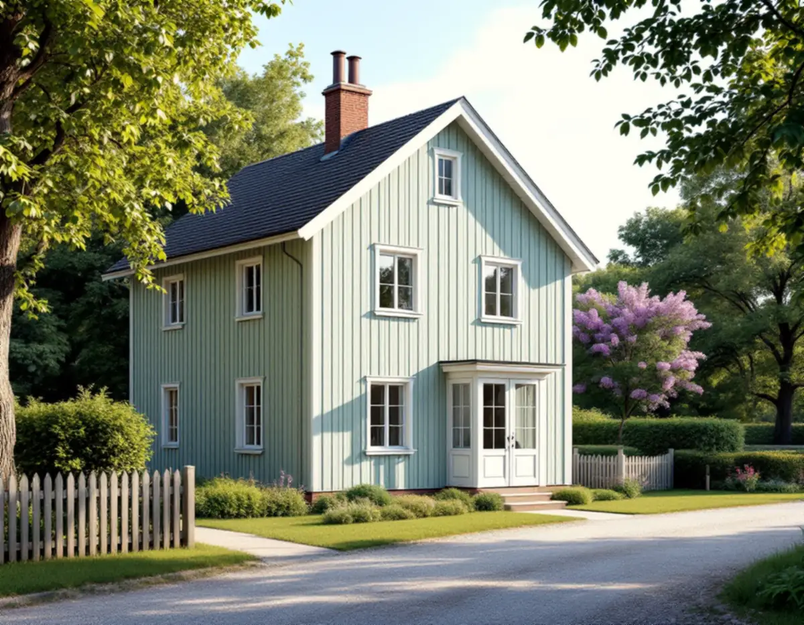
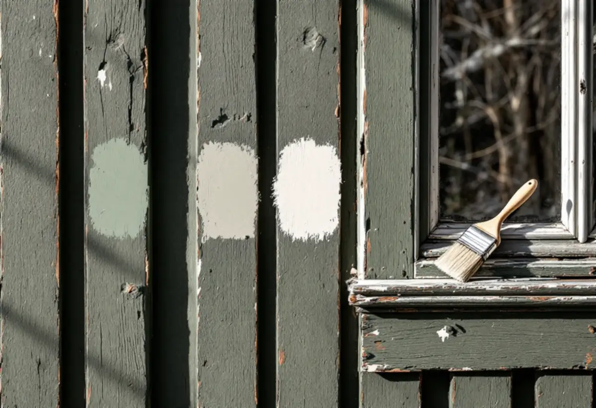
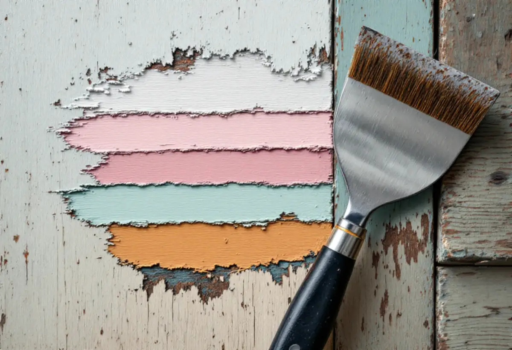

Platsbesök
Vi skrapar fram färglagren och tittar på panel, knutar, foder och fönster.

Sollentunas äldre villastäder växte fram under första halvan av 1900-talet, och där kan en ny kulör bli en fråga för kommunen.
Beskriv jobbet kort.
Något blev fel. Kontrollera uppgifterna eller ring 08 12 410 276.
Vi tittar på jobbet på plats innan du får offert.
Du ser vad som ingår och vad det kostar.
Vi drar av ROT direkt och sköter ansökan.
Geal Entreprenad AB, Bromma. Org.nr 559303-7566.

Geal Entreprenad AB målar om villor i hela Sollentuna och tar fram kulörförslaget så att det fungerar både på väggen och i en ansökan om lov.
Översiktsplanen skriver att Sollentuna ska bevara den prägel av villastad som växte fram under 1900-talets första hälft. Villastadsdelarna fick tidigt en fungerande struktur av gator och kvarter, som planen beskriver som robust och beständig trots senare avstyckningar. Riktlinjerna i kulturmiljöplanen, antagen 1993 och reviderad 2012, med ett tillägg från 2002, ska tillämpas. Där listas byggnader, områden och miljöer som är särskilt viktiga att värna.
I Norrvikens villastad, Väderholmen och Skansen ska avstyckningar och förtätningar inte tillåtas, eftersom kulturmiljöplanen anger att områdenas karaktär ska behållas. I Edsvikens villastad bör de bara tillåtas där gatumiljöns karaktär inte förändras. Kommunen påpekar samtidigt att ett hus kan vara särskilt värdefullt även om det inte finns med i kulturmiljöplanen, och i kartan med gällande detaljplaner går det att tända ett lager som visar de områden planen omfattar.

Kommunen definierar en fasadändring som att byggnaden byter kulör, fasadbeklädnad eller taktäckning, eller att dess yttre karaktärsdrag påverkas på annat sätt. På ett en- eller tvåbostadshus krävs oftast inget bygglov för det. Lov behövs däremot om fastigheten ligger inom ett kulturhistoriskt värdefullt område eller om huset i sig är kulturhistoriskt värdefullt, och inom sådana områden går de lovbefriade åtgärderna inte att använda. För radhus, kedjehus och andra sammanbyggda småhus beror det på hur bebyggelsen är utformad.
Krävs inget lov ansvarar du ändå som byggherre för att ändringen passar husets och områdets karaktär och stämmer med detaljplanen, och vissa planer reglerar fasadmaterialet. Den som vill ha ett beslut på papper kan söka frivilligt bygglov. Kommunen kan också bedöma om huset ligger i ett värdefullt område utifrån foton från samtliga väderstreck och en beskrivning av vad som ska göras.
Kommunens checklista för fasadändring tar upp ansökan via e-tjänst, en situationsplan på tomtkarta, en fasadritning eller ett fotomontage och ett förslag till kontrollplan. Situationsplanen visar tomten och byggnaderna ovanifrån i skala 1:400, och den del som ändras ska markeras tydligt, både för handläggaren och för grannarna. Fasadritningen ska vara i skala 1:100 och visa både den befintliga och den nya fasaden, med fönster, dörrar och takkupor.
Äldre ritningar på huset kan hämtas ur kommunens bygglovsarkiv utan kostnad och användas som grund. Vår del gäller själva målningen: vilken kulör panelen, knutarna, fodren och fönstren ska ha, och var på fasaden de olika kulörerna hamnar. Då visar ritningen eller fotomontaget det som verkligen ska målas, och samma uppgifter står i vårt skriftliga kostnadsförslag.
Riksantikvarieämbetet skriver att linoljefärg dominerade på trähus ända in på mitten av 1900-talet, där rödfärg inte användes. Fabriksblandad linoljefärg började tillverkas på 1930-talet, men platstillredd färg förekom till mitten av 1950-talet. En villa från villastädernas första årtionden kan därför ha linoljefärg i de äldsta lagren, även om det som syns i dag är något annat.
Länsstyrelsernas blad om målning utomhus på trä säger att man behöver veta vilka färgtyper huset har, eftersom det kan vara linoljefärg, alkydoljefärg eller plastfärg i olika lager. Flagor, sprickor och blåsor tyder ofta på plastfärg eller alkydoljefärg. Under 1800-talet utökades färgskalan med gråvitt, rosa och grönt, och fönstren målades ofta mahognybruna eller mörkgröna. Vill du ta fram en tidigare färgsättning kan äldre lager skrapas fram med en vass kniv. Om målning inne finns mer under målare i Sollentuna, om panel och tilläggsisolering under fasadrenovering i Sollentuna och om färgtyper under målare.
Vi skrapar fram färglagren och tittar på panel, knutar, foder och fönster.
Vi läser detaljplanen och tittar på kulturmiljöplanens lager i kartan.
Kulör för varje del av fasaden, som underlag till ritning eller fotomontage.
Förarbete, färgtyp och antal strykningar står var för sig.
Tvätt, skrapning, grundning och strykning i lämpligt väder.
Vi går runt villan med dig och bättrar där det behövs.
Att måla fasader på ett småhus ger rotavdrag enligt Skatteverket, och det gör även monteringen och nedmonteringen av byggnadsställningen. Du ska äga huset medan arbetet utförs och helt eller delvis bo i det.
Avdraget är högst 30 procent av arbetskostnaden, högst 50 000 kr per person och år och högst 75 000 kr tillsammans med rutavdrag. Färg, material och resor ger inget avdrag. Geal drar avdraget direkt på fakturan.
Hur många kulörer fasaden får, hur mycket snickerier, knutar och fönster som ska målas, hur många gamla färglager som måste bort och hur hög villan är väger tyngst. Efter ett gratis platsbesök får du ett skriftligt kostnadsförslag.
Fasad, fönster och invändig målning.
Målare i Stockholm →Takbyte, takbesiktning och plåtarbeten.
Takläggare i Sollentuna →Norrviken, Tureberg och Edsberg.
Takrenovering i Sollentuna →Radhus, villa och en extra bostad.
Attefallshus i Sollentuna →Tillbyggnad, tomtdelning och lov.
Byggföretag i Sollentuna →Villastad, radhus och ventilationen.
Badrumsrenovering i Sollentuna →Villor och radhus i Sollentuna.
Fasadrenovering i Sollentuna →Buller, ljudglas och radhus i Sollentuna.
Fönsterbyte i Sollentuna →Täta gamla fönster med ventilationen i åtanke.
Fönsterrenovering i Sollentuna →Radhus i Sjöberg och villor nära stationerna.
Golvläggare i Sollentuna →Massivt trä eller lamell – vad går att slipa.
Golvslipning i Sollentuna →Villastad och radhuslängor.
Köksrenovering i Sollentuna →Villor och radhus i Sollentuna.
Målare i Sollentuna →Radhusplåt, bleck och rännor i Sollentuna.
Plåtslagare i Sollentuna →Altaner, uterum och bryggor.
Snickare i Sollentuna →Ansökan, solceller och radhus.
Takbyte i Sollentuna →Ny tapet efter prov av väggen.
Tapetsering i Sollentuna →På höjden, nya byggregler och ritningar.
Tillbyggnad i Sollentuna →Radon med i planen för hela huset.
Totalrenovering i Sollentuna →Eller ring 08 12 410 276, mån–fre 08–17.
Beskriv jobbet kort.
Något blev fel. Kontrollera uppgifterna eller ring 08 12 410 276.